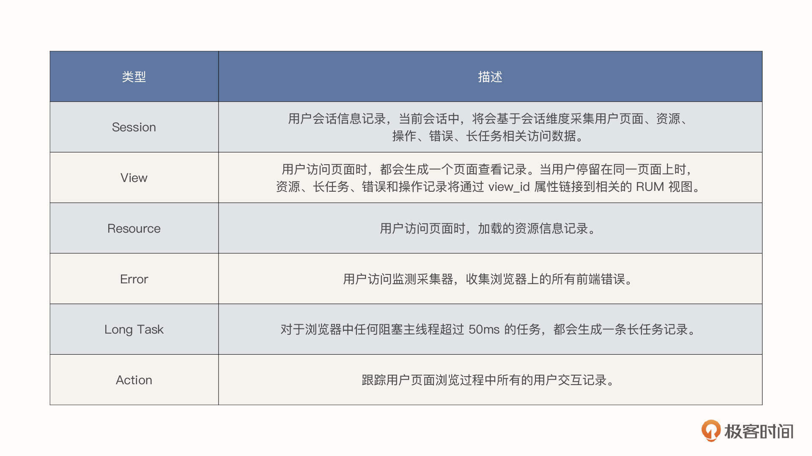
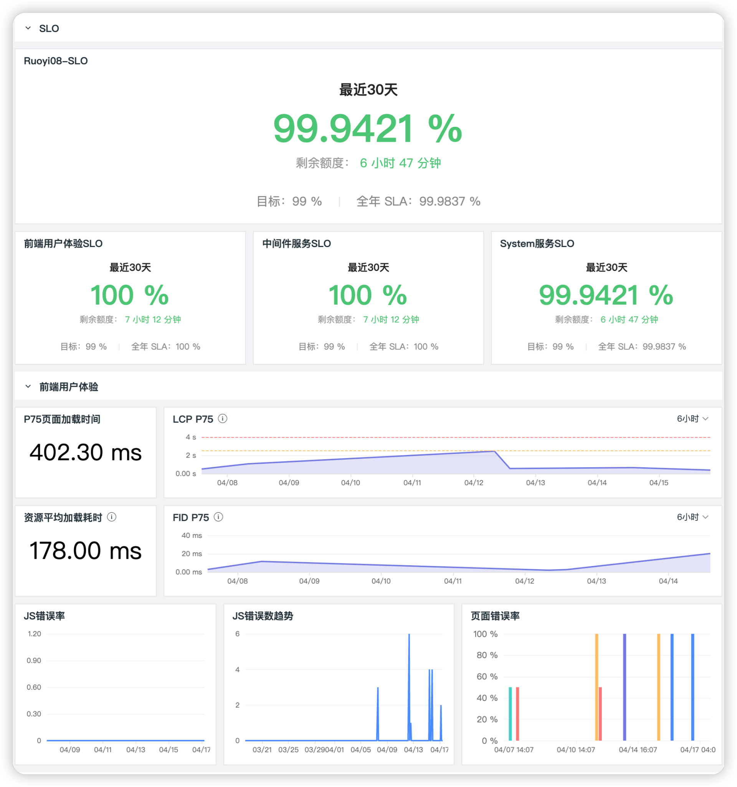
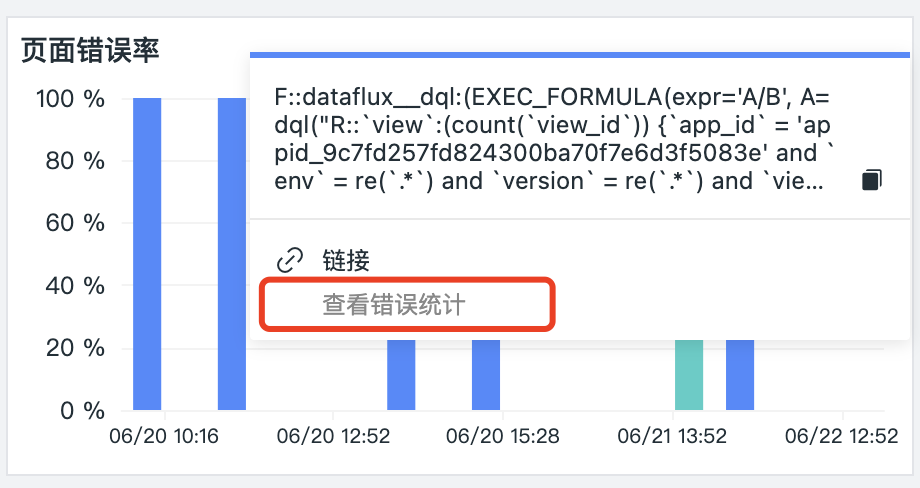
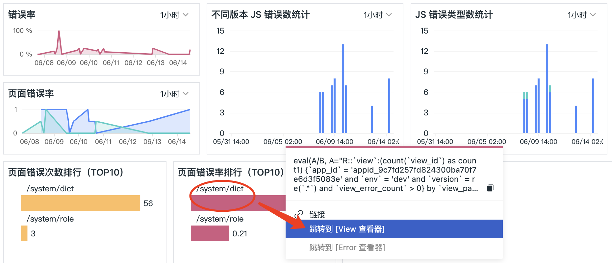
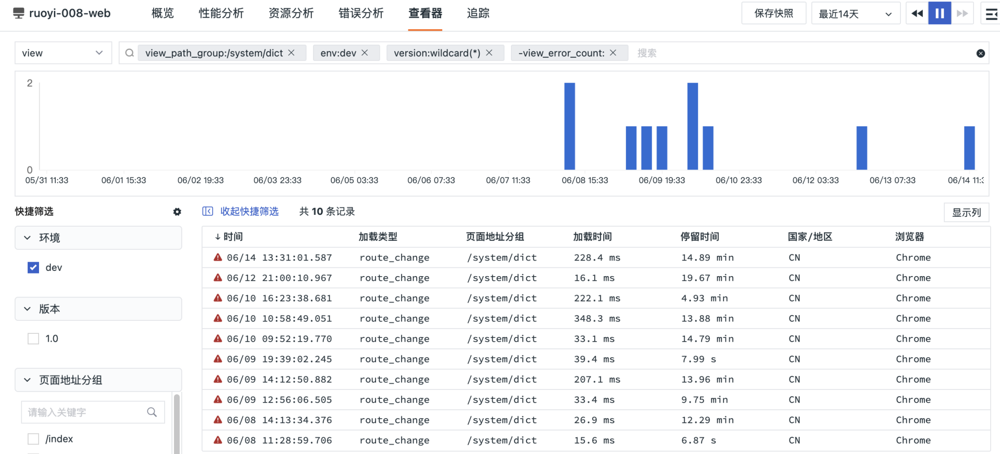
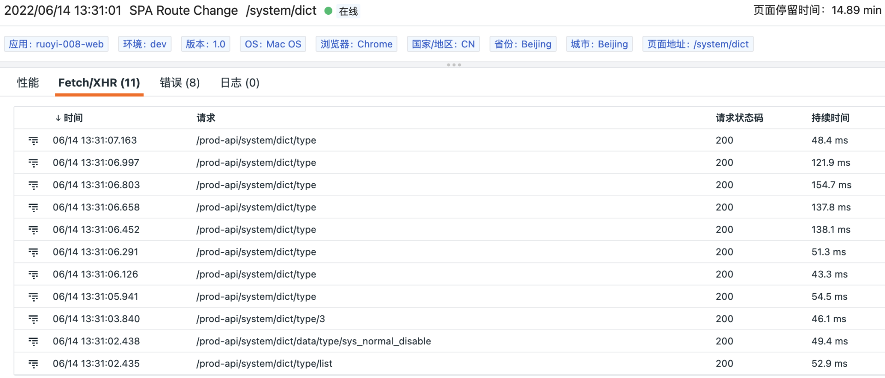
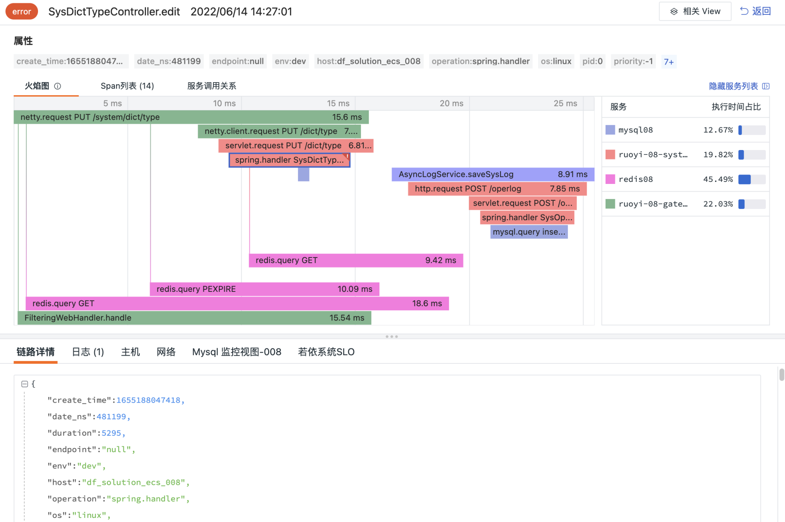
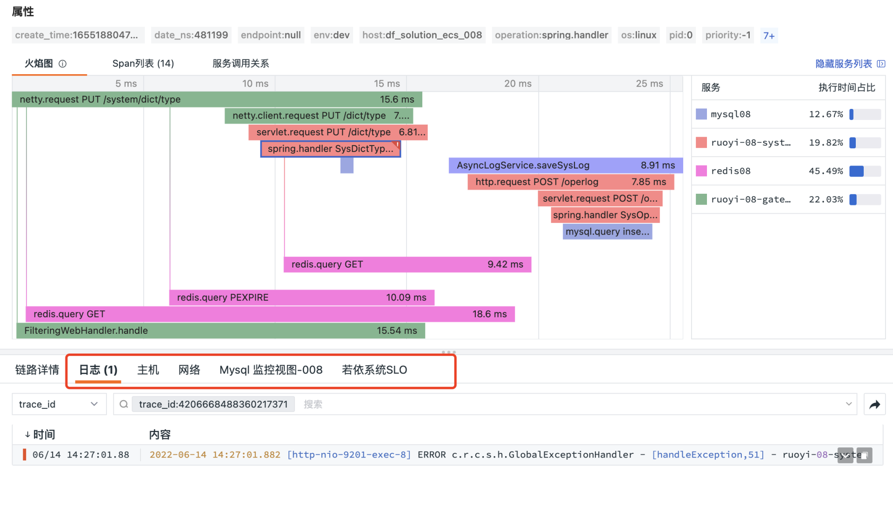
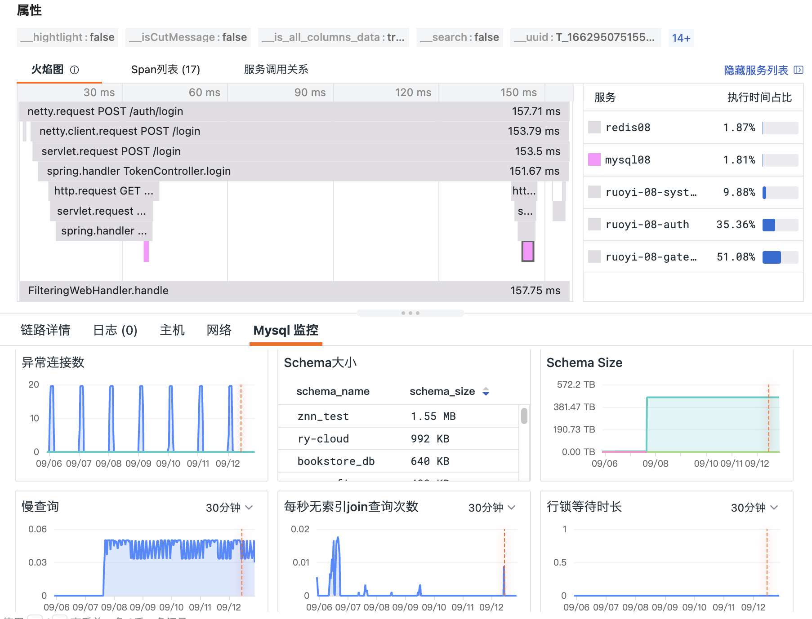

- 00 开篇词 可观测性，让开发和维护系统的你每晚都能睡个好觉！.md.html
- 01 以史鉴今：监控是如何一步步发展而来的？.md.html
- 02 基本概念：指标+日志+链路追踪=可观测性？.md.html
- 03 相互对比：可观测性和传统监控有什么区别？.md.html
- 04 OpenTelemetry：如何利用OpenTelemetry采集可观测数据？.md.html
- 05 构建可观测平台：应该购买商业产品还是自己搭建？.md.html
- 06 团队合作：不同团队如何高效共建可观测性？.md.html
- 07 软件开发：如何利用可观测性进行驱动？.md.html
- 08 建立 SLO：如何为系统可靠性的量化提供依据？.md.html
- 09 跟踪 SLO：如何基于错误预算采取行动？.md.html
- 10 实战 1：从 0 到 1 建立系统应用的可观测性.md.html
- 11 实战 2：基于可观测性数据进行问题分析和根因定位.md.html
- 12 实战 3：构建基于 Kubernetes 的系统可观测性.md.html
- 13 实战 4：建立软件持续集成和发布的可观测性.md.html
- 14 文化建设：如何构建可观测性的文化和框架_.md.html
- 15 展望未来：可观测性在未来的发展趋势是什么？.md.html
- 结束语 在实践中，用科学的方法分析和解决问题.md.html
- 捐赠
11 实战 2：基于可观测性数据进行问题分析和根因定位
你好，我是翁一磊。
在上节课的实战中，我为你介绍了如何采集一个微服务系统各方面的可观测性数据。收集好所有需要的数据之后，我们就可以在可观测平台方便地查看系统和应用软件的运行情况了。
这节课，我们就来看看在遇到问题的时候，怎么使用可观测性数据进行关联分析，定位到问题原因。
可观测性数据的联合
我在第 2 讲的时候曾经说过，可观测性应该是支持高基数、高维度和可探索性的工具，可探索性从另一个角度来说，也是需要将采集到的各种数据能够关联起来，方便在分析问题的时候有效地定位问题。
构建一个可观测系统的核心就是把丰富的数据关联在一起，比如我们需要知道一个访问请求的故障对应的日志是什么，同时它所在的主机（虚拟化环境）或是 Pod（容器环境） 的一些信息，以及它所依赖的中间件、数据库是否存在异常等等。
以前我们往往需要花费大量的时间成本人工在不同的监控、日志、管理系统中调取相关的 UI，即便使用一些工具实现了统一的数据展示，这个实施过程也非常非常复杂。
而观测云这个我们进行可观测性实战的平台，构建了完整的数据标签，也就是 Tag 的体系，而且保证了这些标签在整个系统中是唯一的 Key 且拥有一致性的表达。如: host, pod_name, trace_id, project, cloud_provider, status 等，这样我们在查询不同数据的时候，在构建相关的视图的时候，就可以获得完整的统一认知，也可以快速方便地构建不同数据直接的关联关系了。
下面我从高基数、高维度还有关联性的角度分别给你举一些例子。
高基数
基数对于可观测性很重要，因为高基数信息在调试或理解系统的数据时是最有用的。如果能够按照这些字段，根据其中的唯一 ID 来查询数据，就能够确定问题具体的影响范围。
我们以观测云 RUM 数据为例来看一下高基数的维度。上一节我们就说过，观测云提供对 RUM（也就是用户访问数据）的采集和分析，你可以快速了解用户访问环境、回溯用户的操作路径、分解用户操作的响应时间，了解用户操作导致的后端应用一系列调用链的性能指标情况。观测云采集的用户访问数据包括 6 种数据类型：

这 6 种数据类型的层次结构如下图：

这些数据中包含以下的高基数：
- app_id：用户访问应用唯一的 ID 标识，在控制台上面创建应用时自动生成。
- session_id：会话 id。
- user_id：默认获取浏览器 cookie 作为 user_id。如果使用自定义用户标识设置用户 ID，那么 user_id 就会跟定义的保持一致。
- ip：用户访问的源 IP 地址。
- city：用户访问的来源城市。
- view_id：每次访问页面时产生的唯一 ID。
- view_referrer：页面来源。
- view_url：页面 URL。
- ……
这些高基数的数据能够帮助我们在分析问题的时候，定位到问题的具体影响范围，帮助我们更准确地进行故障排查。
高维度
一个原始数据在产生的时候，产生这个数据的对象本身可能只会知道有限的相关数据，例如：一个日志刚产生的时候，只有时间和消息体，但我们需要根据其输出的路径来赋予标签，形成多维度的数据。如果我们要知道这个日志是在哪台主机或者容器中产生的，那就要追加 host，或是 container_name 和 pod_name，还有容器相关的 deployment, namespace, node, project, version, cloudprovider 等各维度的信息。这些信息会在数据入库前，在全路径上追加标签来与对象进行关联。
下面这个例子，是观测云针对主机中产生的日志所赋予的相关标签：
class_name
create_time
date_ns
filename
filepath
host
index
line
log_read_lines
log_read_offset
log_read_time
message_length
method_name
msg
service
source
span_id
status
thread_name
trace_id
关联性
由于我们面对的是海量的实时数据，为了建立数据相互之间的关联，观测云的数据采集器 DataKit 在收集数据的过程中统一定义了标签。其中， DataKit 在兼容其他第三方工具或框架（例如Prometheus、各种日志采集器、OpenTelemetry 的各种 Instrument SDK）时，都会将其本身的字段转换为观测云自身的标签。
针对不同来源的数据，可能存在不同的数据结构，会出现一些非结构化数据，或者标签的原始数据不统一的情况，我们需要将这些数据结构化。又因为这些数据都是海量的实时数据，不可能像关系型数据那样进行 ETL（抽取、转换和加载），而是需要像流（Stream）一样处理，完成流（Streaming）、转换 (Transforming) 和输出 (Output) 这样一个过程，这就是可观测性的流水线（Pipeline）。
我们最终想要达到的效果就是让标签都关联起来。这种关联不仅仅是为了管理数据，更重要的是方便使用者观测。
我们需要将标签以一种对象的方式表达出来。例如，当我们看到任何数据存在 Host 这个标签时，就能把它和对应这个 Host 值的对象视图关联起来，这样无论在分析日志数据、应用性能还是用户访问数据时，都可以指向对应数据所在主机的相关视图，从而能够关联性地分析这台主机当时的负载情况以及其他相关信息。
建立 SLO 可观测
有了可观测的数据，我们就可以从系统和应用的各个维度来定义 SLI，衡量系统的服务可靠性也就是 SLO 了。在第8讲我们强调说，要选取会影响最终用户体验的指标作为 SLI，然后根据实际 SLO 和错误预算来跟踪问题。如果你记不太清了，可以回去复习一下。
在观测云中，建立 SLO 之后，可以通过仪表盘来持续跟踪，并将相关的 SLI 统一展示出来，下图便是一个例子。同时，我们也可以针对 SLI 和 SLO 的状态设定监控器，及时获取异常事件的告警。

通过可观测性数据进行问题分析
当你通过仪表盘直接查看整个服务 SLO 和错误余额的情况时，也能够同时查看相关 SLI 的情况。比如说，如果发现页面错误率有异常，你可以进一步进行分析，查看错误的详细情况。

在错误分析页面，我们还能进一步查看多个维度的错误统计。例如，想了解具体哪些页面有报错，可以查看“页面错误率排行”，然后进一步下钻去查看这个页面（也就是 View 查看器）的详细信息。

通过 View 页面，我们可以看到用户访问时的页面性能数据，包括页面地址、页面加载类型、页面加载时间、用户停留时间等。如果列表最左侧出现红色小三角的标记，说明这个页面是有报错的，点击其中一条可以查看详细的信息。

因为之前我们已经做了数据的关联，所以我们可以继续下钻，查看相关的链路、日志和指标信息，还能够直接查看相关联的视图。也就是说，在一个界面中，我们可以多维度地查看各种数据。
就像我之前说过的，在现今复杂的系统中，面对一个问题，我们很可能并不知道问题的原因是什么，因此只有将数据统一和关联起来，才能够“自由”地分析问题，找到问题的应对策略。
比如说，点击“Fetch/XHR”的标签页，我们就可以查看用户在访问时，向后端应用发出的每一个网络请求，包括发生时间、请求的链路和持续时间；如果网络请求存在对应的 TraceID，而且已经和前端用户访问的数据进行了关联，那么我们就可以点击列表中的某个请求，进一步下钻来分析问题。

点开具体的请求之后会跳转至对应链路的详情页，这里我们可以看到链路 Tracing 的详细信息，包括整条链路中每个 Span 的流转和执行时间。如下图所示，这时候我们可以注意到有一条红色标记的 Span，这表示系统有报错，我们可以在详情中查看详细的报错信息，定位问题的原因。

还有的时候，问题的情况比较复杂，所以我们希望不仅能够查看链路的属性和耗时，也能够直接查看相关的日志、主机的性能、网络情况以及相关联的视图，将各维度的数据综合在一个界面来分析。
在观测云中，如下图所示，当我们查看链路的详细信息时，也能够同时关联地分析链路发生时相关主机的负载情况（包括指标和网络）、相关的日志等信息。

同时，我们可以在观测云中自定义绑定视图到查看器，在上图中，“链路详情”右侧的各种视图就都是动态关联的。将内置视图与链路服务、应用、日志源、项目、或其他自定义字段进行绑定，匹配字段值的查看器，然后通过侧滑详情页查看新增被绑定的内置视图。
我们可以根据服务的类型、应用 ID 或者标签等维度来进行关联，而不是写死一个维度，只能往固定方向排查。例如在下图中，可以将 MySQL 数据库的监控视图与 MySQL 相关的服务绑定在一起，这样在查看 MySQL 相关的链路时，也能够同时查看数据库的负载情况，更加全面地分析问题。

小结
好了，这节课就讲到这里。通过这节课的实战，相信你已经看到了，建立了可观测之后，在调试或排查问题时，你可以通过探索数据来迭代调查你关心的条件，看看它能揭示系统的什么状态。
在这个过程中，你不需要提前预测问题，只需要按照你的思路去提出问题，去寻找线索或答案，然后提出下一个问题，再下一个。这样一遍又一遍地重复这个模式，就能在大海中找到你要找的那根针。
所以说，能够跟踪代码并知道时间花在了哪里，或者从用户的角度再现行为总是很有帮助的。无论你的软件架构是什么样子，可观测性无疑可以提高团队效率，发现和解决生产环境中不可预测的问题。在现代分布式系统中，可观测性工具就像我们的手术刀和探照灯，变得越来越不可或缺。
课后题
在这节课的最后，我留给你一道作业题。
请根据我们这节课的内容，通过可观测性的数据分析一下你负责的系统，查找一下平时你可能不知道的一些问题。如果有所收获或者发现，欢迎你在留言区和我交流讨论。
我们下节课见！
© 2019 - 2023 Liangliang Lee. Powered by gin and hexo-theme-book.